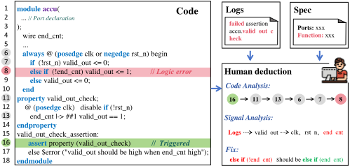
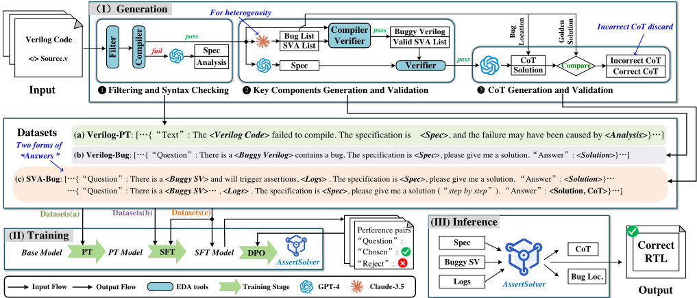
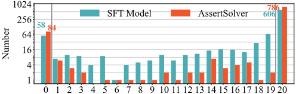
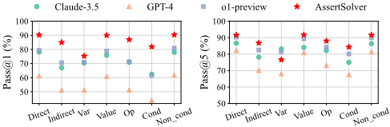
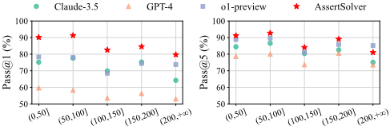
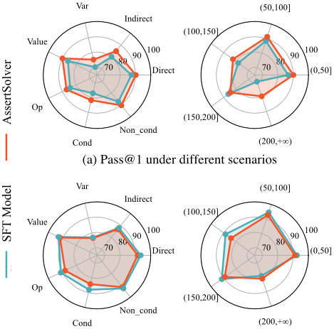

从对与错中汲取洞见：一个用于解决 RTL 设计中断言失败的大语言模型（AssertSolver）
该论文针对 RTL 仿真中 SVAs 断言失败的定位与修复高度依赖人工分析多信号逻辑与时序关系、耗时费力且缺乏自动化工具的问题，提出首个开源 LLM——AssertSolver。方法上以 Deepseek-Coder-6.7b 为基座，通过 LLM 与 EDA 工具（Icarus Verilog 编译器、SymbiYosys 形式验证）结合的三阶段数据增强，自动生成 Spec、随机 bug、SVA 与日志并构建经校验的 CoT；训练采用持续预训练（PT）+ SFT + DPO 三阶段策略，让模型从挑战性案例的错误响应中学习。在自建 SVA-Eval 基准（877 个机器生成样本 + 38 个人工样本）上，AssertSolver 取得 pass@1 88.54%、pass@5 90.00%，较 o1-preview 分别提升 11.97% 与 2.26%。结论表明领域微调结合数据增强与错误学习可显著推进断言失败自动修复，对团队验证 debug 自动化与 AI 辅助方法学建设有直接参考价值。
RTL 仿真中 SystemVerilog Assertions (SVAs) 断言失败后，定位并修复根因需要深入分析多信号间复杂的逻辑依赖与时序关系，高度依赖工程师经验、耗时费力，目前没有可用的自动化辅助工具；同时闭源 SOTA LLM（GPT-4、o1-preview）性能易受 unnoticed changes 影响，且用户无法对其进行再训练或微调以纳入新数据。
提出开源 LLM AssertSolver：(1) 三阶段数据增强——脚本过滤 + Icarus Verilog 语法检查构建 Verilog-PT 数据集（22,646 条）；用 Claude-3.5 生成随机 bug 与 SVA，并以编译器 + SymbiYosys 两步验证确保 bug-SVA 对确实触发断言失败并生成日志，构建 Verilog-Bug（36,650 条）与 SVA-Bug（7,842 条）数据集；用 GPT-4 生成 CoT 并以脚本对照 golden solution 校验（约 74.55% 正确）。(2) 训练策略——基于 Deepseek-Coder-6.7b 做持续预训练（PT）、监督微调（SFT），再用 DPO 利用 SFT 阶段对挑战性案例（20 次生成中至少一次错误）的错误响应构造偏好数据，使模型从错误中学习。(3) 推理时输入 Spec、buggy SV 代码与日志，以 JSON 格式输出疑似 bug 行、修复建议与 CoT。
AssertSolver 在 SVA-Eval 上 pass@1 达 88.54%、pass@5 达 90.00%，超过第二名 o1-preview（76.57%/87.74%）分别 11.97% 和 2.26%
基座模型 pass@1/pass@5 低于 5%/16%，经 PT+SFT 后 SFT 模型与 AssertSolver 均超过 80%，pass@1 提升超过 16 倍、pass@5 提升 5 倍
DPO 使 pass@1 从 SFT 模型的 84.66% 提升至 88.54%，但 pass@5 从 91.64% 略降至 90.00%，表明精度提升以解的多样性下降为代价
SVA-Eval-Human（人工样本）相对 SVA-Eval-Machine，各模型 pass@1 平均相对下降约 19%、pass@5 约 15%，提示机器生成与人工 bug 可能存在系统性差异
在 12 种 bug 类型/代码长度场景中，AssertSolver pass@1 全面领先、pass@5 在 10/12（83%）场景领先；对 100 行以内代码及 'Direct'、'Value'、'Non cond' 类 bug，pass@1 与 pass@5 均超 90%
数据规模：Verilog-PT 22,646 条、Verilog-Bug 36,650 条、SVA-Bug 7,842 条；约 74.55% 的 GPT-4 生成 CoT 通过校验；SVA-Eval 含 877 个机器生成样本与 38 个来自 RTLLM 的人工样本
首个面向断言失败求解的开源 LLM。区别于直接调用闭源 SOTA 模型（GPT-4、o1-preview），其模型可由用户再训练与微调。主要创新包括：(1) 结合 LLM 生成与 EDA 工具（编译器语法检查 + SymbiYosys 形式验证）的自动化数据增强流程，弥补训练数据中断言失败场景的欠表示；(2) 利用 SFT 阶段错误响应构造 DPO 偏好数据、让模型从错误中学习的训练策略；(3) 发布开源基准 SVA-Eval（含机器生成与人工 curated 样本）及模型权重。
相关度级别：high
命中能力域：2.4 设计验证方法学 | 2.7 EDA/验证自动化与 AI 辅助
理由：论文直接命中 2.7（LLM/AI 辅助验证与 bug 分析）与 2.4（bug triage 与 debug 方法学）：断言失败定位与修复是团队 UVM/SVA 驱动回归中日常 debug 的核心痛点，AssertSolver 展示了从 Spec+代码+日志自动输出 bug 行、修复建议与推理过程的完整可行路径；其数据增强管线中用 SymbiYosys 对 SVA 有效性做形式验证、用编译器过滤语法错误的做法，对团队构建自有 AI 辅助 debug 数据管线亦有直接借鉴意义。对 LPDDR5X/HBM4/UCIe 等产品线大量 SVA 回归失败的自动 triage 具有潜在落地价值。
建议动作：深入精读并做内部分享
arXiv:2503.04057v1 [cs.AR] 2025年3月6日
功能验证是现代电子设计自动化（Electronic Design Automation, EDA）流程中的关键步骤，用于确保设计满足其规格说明并按预期正确运行 [1]，从而降低与硅片失效相关的昂贵风险 [2], [3]。SystemVerilog 断言（SystemVerilog Assertions, SVAs）作为功能验证的关键方法之一 [4]，通过定义逻辑条件和时序要求来捕获寄存器传输级（Register Transfer Level, RTL）设计中的潜在错误。与基于激励的验证方法（例如使用测试平台）不同，SVAs 不仅便于进行由激励触发的检查，还能支持形式验证 [5]。形式验证通过数学方法证明被测设计（design under test, DUT）与 SVAs 所规定的行为之间的一致性，可提供更高的功能覆盖率，并能处理基于激励的方法常常忽略的边界条件。
尽管 SVAs 具有显著优势，且其自动生成已取得进展 [6]-[11]，但自动解决断言失败仍然充满挑战。断言失败发生在设计于仿真过程中表现出非预期行为时。有效地识别并修复这些失败仍然严重依赖人工经验，以分析多个信号之间错综复杂的逻辑依赖关系和时序关系，这一过程耗时且费力。图 1 表明，验证工程师必须深入理解设计的功能意图，并仔细推断复杂断言失败的原因。
大语言模型（Large Language Models, LLMs）已在驾驭复杂思路方面展现出显著能力，可自动化硬件设计中的关键步骤。它们改进了从代码生成 [12]-[16] 到设计验证 [17]-[19] 的一系列任务，为解决断言失败提供了可能。然而，尽管 OpenAI 的 GPT-4 和 o1-preview 等最先进（state-of-the-art, SOTA）的 LLMs 在此类任务中表现出胜任能力，但其性能常常会受到未被察觉的变化的影响，并且用户无法通过重新训练或微调使其纳入新的数据或信息。

为解决这一局限，我们提出了一种开源 LLM——AssertSolver，专门用于自动解决断言失败。如图 2 所示，AssertSolver 得益于一种创新的数据增强方法，该方法提升了训练数据集中各类断言失败场景的表示，而这些场景此前代表性不足。AssertSolver 基于 Deepseek-Coder-6.7b [20] 进行重新训练和微调，所使用的数据集不仅包含显著增强的样本，还包含针对困难案例的错误响应。通过从这些“正确”与“错误”样本中学习，AssertSolver 在解决断言失败方面相比 OpenAI 的 o1-preview 取得了最高 11.97% 的提升。
本文的主要贡献如下：
本文其余部分的组织结构如下：第II节介绍数据增强方法以及训练数据集的准备工作。第III节详细描述我们的训练策略。第IV节概述研究问题与实验设置。第V节给出全面的评估以回答研究问题。第VI节对全文进行总结。
为了有效训练大语言模型（LLM）以解决断言失败问题，获取一个全面的训练数据集至关重要。尽管现有数据集包含大量适合初步预训练的 Verilog 代码样本，但它们缺少将模型微调至这一特定任务所需的关键组件。这些组件包括设计规格、SystemVerilog 断言（SVA）、可能导致这些断言失效的缺陷的详细信息，以及相应的验证结果。为弥补这一空白，我们提出了一种将 LLM 与电子设计自动化（EDA）工具相结合的方法，对现有的开源 Verilog 代码进行增强，从而生成解决断言失败所需的必要组件。此外，为帮助用户理解模型的问题求解过程，我们在数据集中引入了思维链（CoT）[21]。这一引入旨在提升模型决策过程的透明度。在本工作中，我们按照以下 3 个阶段，利用来自 Hugging Face 的 108,971 个 Verilog 代码样本对一个开源数据集 [22] 进行了增强，如图 2(I) 所示。

阶段 1：过滤与语法检查。对于来自 [22] 的 Verilog 代码样本，我们采用脚本过滤掉表现出某些不良特征的代码。具体而言，我们依据以下标准排除代码样本：
随后，其余每段代码都通过 Icarus Verilog 编译器 [23] 进行了语法检查。存在可检测语法错误的代码（例如编译失败的代码）被排除在后续流程之外，以防止其进入后续可能触发断言的阶段。然而，这些错误代码样本并未被丢弃；相反，它们被纳入了 Verilog-PT 数据集，因为它们能为理解 Verilog 代码的结构提供有价值的见解。语法检查完成后，我们使用 GPT-4 为所有代码样本生成设计规格（Spec），但仅对编译失败的代码样本进行了进一步分析。该分析旨在解释语法错误的成因，为 Verilog-PT 数据集的构建做出贡献，如图 2 中数据集 (a) 所示。Verilog-PT 数据集包含 22,646 条条目，将在第 III-A 节中使用。
阶段 2：关键组件的生成与验证。对于成功编译的代码，我们使用 Claude-3.5 生成随机缺陷和 SVA。之所以使用 Claude-3.5 而非 GPT-4，是为了利用这些模型的异构设计，从而帮助 GPT-4 在阶段 3 的自我验证过程中避免落入错误陷阱。
为了减轻大语言模型（LLM）幻觉[24]- [26]所造成的影响，我们在此阶段利用电子设计自动化（EDA）工具来验证所生成组件的正确性。我们通过将编译器与验证器SymbiYosys [27]相集成，采用了两步验证流程。每个生成的SystemVerilog断言（SVA）被插入到对应的Verilog代码中，并使用SymbiYosys进行验证，以确保这些SVA的有效性。此外，我们再次使用编译器来识别并消除随机bug生成过程中引入的语法错误。其余的bug被逐一注入到Verilog代码中，随后使用SymbiYosys将每个修改后的版本与对应的SVA一起进行验证，以确保该bug-SVA对能够引发断言失败并生成日志。
与断言失败相关的bug-SVA对中约90%被选中并在阶段3中进行处理。其余10%被保留用于测试，详见第IV-C节。这一选择过程的结构设计旨在确保训练数据集与测试数据集完全分离，具体包含以下步骤：
未能引发断言失败的bug（可能是由于SVA覆盖率不足）被保留下来，因为它们代表了原始Verilog代码中的功能问题。这些bug连同Spec、Verilog代码和解决方案一起被组织成VerilogBug数据集。如图2中数据集（b）所示，该数据集包含36,650个条目，并在第III-B节中用于增强模型对验证过程的理解。
阶段3：思维链（CoT）生成与验证。为了增强我们模型的透明度，我们将CoT纳入训练数据。这一整合过程涉及使用GPT-4，我们向其提供了Spec、含bug的SV代码、日志以及bug位置。GPT-4的任务是生成一个CoT，清晰阐述其识别错误代码并建议修正背后的推理。
随后，我们使用一个脚本，通过将GPT-4的输出与从阶段2获得的“黄金解”（golden solution）进行比较来验证这些CoT。“黄金解”由最初的含bug代码及其正确版本推导得出。如果GPT-4识别出的错误及其提出的修正与“黄金解”一致，我们认为该CoT是正确的。
总体而言，生成的CoT中约74.55%被判定为正确。根据这些CoT的正确性，我们将两类条目组织到SVA-Bug数据集中，该数据集共计7,842个条目，如图2中数据集（c）所示。对于CoT正确的条目，“Question”部分包含短语“step by step”，而“Answer”部分则同时详细列出含bug的行及其修正后的代码，以及CoT。否则，“Answer”部分仅包含含bug的行和正确的代码。该数据集专门设计用于使模型具备解决断言失败并解释推理过程的能力，在第III-B节中被使用。
为了充分发挥第II节所生成数据集的潜力，我们为AssertSolver实现了一种量身定制的训练策略，如图2(II)所示。我们的策略首先是在VerilogPT数据集上使用基础模型Deepseek-Coder-6.7b进行基础预训练（PT）阶段。这一步旨在增强模型对Verilog代码结构和设计规范的理解。随后，我们采用监督微调（SFT）方法，在SVA-Bug和Verilog-Bug数据集上对AssertSolver进行微调。这一步旨在使模型具备解决断言失败所需的技能，并扩展其在相关Verilog调试任务上的泛化能力。为了进一步提升模型性能，我们重新审视了SFT阶段中未能解决的断言失败案例，特别是那些响应不正确的案例，并采用直接偏好优化（DPO），使我们的模型能够从这些针对挑战性案例的错误响应中学习。
预训练对大语言模型（LLM）至关重要，尤其是在使其具备处理 Verilog 和 SystemVerilog 等专用语言的能力时。在这一阶段注入领域特定知识十分重要，它能够在任何针对性微调开始之前构建起坚实的理解基础。近期研究 [14]、[28] 证实，在领域特定数据集上进行持续预训练，包括无标注的 Verilog 代码以及语法上相似的语言（如 C/C++ 代码），能够显著提升基座模型对硬件描述语言（HDL）的理解，并改善其在下游任务中的表现。基于这些认识，我们使用 Verilog-PT 数据集实施了持续预训练，该数据集由编译失败的 Verilog 代码及其对应的规格说明和编译失败分析组成。基座模型 Deepseek-Coder-6.7b 已在大规模程序设计语料库上完成了初步训练，且模型轻量，因此非常适合这一应用。这种聚焦式的预训练策略至关重要，因为 HDL 中的时序与并发特性与软件编程范式存在显著差异。
在预训练过程中，Verilog-PT 数据集 D PT = { x ( i ) } N i =1 中的每个样本 x ( i ) 都被视为一个 token 序列。这些 token 是自然语言处理任务中的基本单元，使 LLM 能够基于它们进行推理以实现下一 token 预测，进而支持文本生成 [29]-[32]。每个样本的序列表示为 x ( i ) = ( w ( i ) 1 , w ( i ) 2 , . . . , w ( i ) T ( i ) ) ，其中 w ( i ) t 表示第 t 个 token，T ( i ) 表示该序列中 token 的总数。该阶段的训练目标是最小化整个数据集上的负对数似然损失：
其中，context ( i ) t 指代位于 w ( i ) t 之前的 token 序列，作为预测 w ( i ) t 的依据；P ( w ( i ) t | context ( i ) t ; θ ) 表示基于该上下文预测第 t 个 token 的概率，由模型参数 θ 决定。这一预训练为后续的微调过程奠定了基础，并使模型具备处理硬件设计领域内任务的能力。
在无监督预训练阶段（该阶段模型的主要学习任务是预测下一个 token）之后，监督微调（SFT）旨在转变模型的能力。这一转变将重点从单纯的文本续写，转移到解决由断言失败提出的特定问答挑战上，这类挑战需要精确且有监督的回答。
为此，我们使用了 SVA-Bug 数据集，该数据集包含 Spec、含缺陷的 SV 代码以及日志。这些元素被组织成模型的输入 x，如图 2 数据集 (c) 中的 'Question' 部分所示。模型的输出（即 'Answer'）y 至少必须包含缺陷所在行的代码片段以及对应的正确代码。此外，如果思维链（CoT）在第 II 节的阶段 3 中被验证为正确，它也会被包含在 y 中，通过详细的推理步骤来增强答案，并在 x 中以关键词 'step by step' 加以标记。另外，我们还将 Verilog-Bug 数据集作为辅助任务引入，以更广泛的 Verilog 调试场景进一步丰富训练数据。来自该数据集的数据对 ⟨ x, y ⟩ 经过结构化组织，使模型的输入 'Question' 中包含含缺陷的 Verilog 代码，而 'Answer' 中则提供修复方案，其中列出缺陷行及其修正后的版本，如图 2 数据集 (b) 所示。在 SFT 过程中将这些数据集相结合，确保了模型获得全面的学习体验。
SFT 的目标是提升模型基于输入 x ( i ) 与先前已生成 token 序列 y ( i ) <t 之间的上下文交互来预测 y ( i ) 中下一个 token 的能力。该方法旨在训练模型识别并复现给定 'Question' 与 'Answer' 之间的正确关系：
其中，y ( i ) t 表示输出序列 y ( i ) 中的第 t 个 token，y ( i ) <t 表示位于 y ( i ) t 之前的 token 序列。似然 P ( y ( i ) t | y ( i ) <t , x ( i ) ; θ ) 表示在给定 y ( i ) <t 和输入上下文 x ( i ) 的条件下预测 token y ( i ) t 的概率，由模型参数 θ 决定。SFT 使模型能够以预期的格式生成答案，并对底层硬件描述语言形成更深入的理解。
在 SFT 阶段，AssertSolver 主要接触的是正确响应，这限制了其处理错误或从错误中学习的能力——而这是人类学习的一个关键方面。正如 [33]、[34] 的研究所指出的，有效的学习不仅包括吸收正确响应，还包括对错误进行反思并从中吸取教训，以防止未来出现错误。当前的训练范式往往忽视或丢弃错误数据。受近期研究 [35]-[37] 的启发，我们提出赋予 AssertSolver 从自身错误中学习的能力，从而增强其决策过程。
| Type | Description | Expected Form | Unexpected Form | Assertion † |
|---|---|---|---|---|
| Direct | Bug signal appears directly in the assertion. out <= in; | out <= in | + 1; | assert(out == in ) |
| Indirect | Bug signal does not appear directly in the assertion. | temp <= in; out <= temp; | temp <= in + 1; out <= temp; | assert(out == in) |
| Var | Incorrect variable name or type. | out = in ; | out = input ; | - |
| Value | Incorrect variable values, constants, or signal bit widths. | out = 4'b1010; | out = 4'b1110; | - |
| Op | Misuse of operators. | out = a | b; | out = a & b; |
| Cond | Bug in conditional statement (e.g., if , always ). | if (valid) out <= in; | if (!valid) out <= in; | - |
| Non cond | Bug unrelated to conditional statements. | if (valid) out <= in ; | if (valid) out <= input; | - |
| Type | Description | Expected Form | Unexpected Form | Assertion † |
| Length Interval | (0, 50] | (50, 100] | (100, 150] | (150, 200] | (200, + ∞ ) |
|---|---|---|---|---|---|
| SVA-Bug | 3400 | 2444 | 921 | 431 | 646 |
| SVA-Eval | 431 | 260 | 102 | 58 | 64 |
| Bug Type | Direct | Indirect | Var | Value | Op |
| SVA-Bug | 5478 | 2364 | 546 | 5104 | 2254 |
| SVA-Eval | 615 | 300 | 47 | 601 | 274 |
| Bug Type | Cond | Non cond | - | - | - |
| SVA-Bug | 1573 | 6269 | - | - | - |
| SVA-Eval | 204 | 711 | - | - | - |
| Length Interval | (0, 50] | (50, 100] | (100, 150] | (150, 200] | (200, + ∞ ) |
为此，我们使用 SVA-Bug 数据集中的全部样本对 SFT 模型进行评估。如图 2 中数据集 (c) 所示，每个样本包含一个“Question”部分，作为模型的输入。对于每个输入，模型生成 20 个响应。随后，通过将模型所建议的出错行与数据集中的正确“Answer”进行比较来评估正确性。在这 20 个输出中产生至少一个错误响应的样本被归类为困难案例（challenging cases），代表模型尽管此前已接触过正确解法却仍难以处理的实例。在每个困难案例中，“Question”记为 x，正确的“Answer”记为 p。针对 x 的错误响应记为 n [ k ]，其中 k < 20 。
我们将它们抽象为三元组：D DPO = { ( x ( i ) , p ( i ) , n [ k ] ( i ) ) } N i =1，其中 N 表示困难案例的数量。对于该偏好数据集 D DPO，目标是训练模型在处理每个 x ( i ) 时，优先生成正确响应 p ( i ) 而非错误响应 n [ k ] ( i )。这一目标通过直接偏好优化（DPO）损失函数来实现，该函数鼓励模型最大化生成正确响应 p ( i ) 的概率，同时最小化生成错误响应 n [ k ] ( i ) 的概率：
在此函数中，π θ 和 π ref 分别表示当前模型和参考模型（在本文语境中即 SFT 模型）。其中，π θ ( p ( i ) | x ( i ) ) 和 π ref ( p ( i ) | x ( i ) ) 表示在各自模型下，给定输入 x ( i ) 时生成正确响应 p ( i ) 的似然。类似地，π θ ( n [ k ] ( i ) | x ( i ) ) 和 π ref ( n [ k ] ( i ) | x ( i ) ) 对应于对同一输入生成第 k 个错误响应 n [ k ] ( i ) 的概率。这些概率的对数比率量化了两个模型之间的差异。两个对数比率之差刻画了 π θ 相对于生成错误响应 n [ k ] ( i ) 而言对生成正确响应 p ( i ) 的偏好，从而引导模型生成正确答案。缩放因子 β 设为 0.1，用于控制对数比率项的权重；sigmoid 函数 σ 将对数比率值映射到 [0 , 1] 范围内的概率，从而在确保训练稳定性的同时实现平滑学习。这种方法使 AssertSolver 不仅能够从错误中学习，还能提高其在具有挑战性的案例中的响应准确率，从而获得更稳健的决策能力。
为了评估我们训练的模型的有效性，我们开展了大量实验，旨在回答四个关键研究问题。本节概述了数据集属性、基准测试与最先进（SOTA）对比方法、评估指标以及实现细节。
评估的结构旨在研究以下四个研究问题：
解决断言失败的挑战因缺陷类型和代码长度的不同而有显著差异。某些类别天生就比其他类别更为复杂。例如，不直接触发断言失败的时序相关缺陷需要深入的推理和分析，这使得它们对验证工程师而言更加复杂。类似地，较长的代码长度可能会增加调试的复杂性，因为它们通常涉及更复杂的逻辑，并且出现细微错误的可能性更高。认识到这一点，我们对导致断言失败的缺陷类型进行了分类，如表 I 所示。我们还分析了训练数据集和测试数据集中的代码长度以及落入每个已识别缺陷类别的实例数量，如表 II 所示。这一分类对于评估大语言模型（LLM）在不同类别上的性能至关重要，因为它有助于确定 LLM 能否有效地解决符合我们预期的缺陷类型。
| Metric | Base Model | SFT Model | AssertSolver |
|---|---|---|---|
| Pass@1 | 4.35% | 84.66% | 88.54 % |
| Pass@5 | 15.62% | 91.64 % | 90.00% |
| Metric | Base Model | SFT Model | AssertSolver |
鉴于目前缺乏用于评估解决断言失败相关任务的开源基准，我们开发了一个名为 SVA-Eval 的基准来填补这一空白。该基准由 877 个由 LLM 生成的样本（SVA-Eval-Machine，如第 II 节所述）以及 38 个从 RTLLM 数据集 [38] 中人工精选的样本（SVA-Eval-Human）组成，既确保了数据集的规模，又涵盖了真实场景。SVA-Eval 中的每个样本均包含 Spec、含缺陷的 SV 代码、日志以及正确解法，为评估提供了全面的资源。该数据集已在 https://github.com/SEU-ACAL/reproduce-AssertSolver-DAC-25 上公开，以支持该领域的进一步研究。
为了将 AssertSolver 与当前最先进（SOTA）的 LLM 进行比较，我们选择了若干可商用的闭源模型作为基准，包括 Claude-3.5、GPT-4 [39] 以及 OpenAI 最新的 o1-preview，这些模型在 RTL 生成与调试任务中均已展现出卓越的能力。此外，我们还将对比分析扩展至开源模型，包括 CodeLlama-6.7b [40]、Llama-3.1-8b 以及我们的基础模型 Deepseek-Coder-6.7b [20]。这种包容性的做法旨在全面呈现 AssertSolver 在各类平台与开发环境中的性能表现。
为了评估我们的大语言模型（LLM）在解决断言失败方面的性能，我们采用了 pass@k 指标，该指标在硬件设计的性能评估中被广泛使用 [22]、[41]、[42]。该指标通过衡量 LLM 针对每段导致断言失败的有缺陷 SV 代码生成正确解的能力，来量化 LLM 的有效性。对于每个实例，模型会获得有缺陷的 SV 代码及其对应的规格说明和日志，并据此生成 n 个可能的解。随后，我们对这些解进行评估，若其中 c 个解成功解决了断言失败，则将其判定为有效。这种方法能够对前 k 个选择中至少有一个解决该问题的可能性给出无偏估计，如下式所示：
在本研究中，我们设定 n = 20，k = { 1 , 5 }。
训练。我们使用 8 块 A800-80G GPU 对 Deepseek-Coder-6.7b 模型进行了微调，并借助 DeepSpeed ZeRO-

3 [43] 加速了这一过程。我们选择全参数微调以获得最优性能，并为预训练和监督微调（SFT）设置了 10 - 4 的初始学习率，同时在前 10% 的训练步数中加入了预热阶段。对于直接偏好优化（DPO），则采用了较低的 10 - 6 学习率，因为其重点在于学习正确答案与错误答案之间的差异，而非直接针对显式答案进行优化。
推理。我们将基准测试中的 Spec、有缺陷的 SV 代码和日志组合起来，要求 LLM 以 JSON 格式返回响应，其中包含候选缺陷行、建议的修复方案以及思维链（CoT）（图 2(III)）。在实验中，我们发现开源模型经常偏离提示词格式，因此我们迭代地改进提示词，直到每个断言失败案例都能生成 n = 20 个 JSON 响应，用于 pass@k 评估。温度设为 0.2，以获得既一致又多样的输出；但 o1-preview 除外，其温度是固定的，无法通过应用程序编程接口（API）进行调整。
RQ1：为回答该问题，我们使用 SVA-Eval 数据集比较了三个模型：基础模型、监督微调（SFT）模型和 AssertSolver。如表 III 所示，基础模型的 pass@1 和 pass@5 比率分别低于 5% 和 16%。相比之下，经过基于我们增强数据集的预训练与微调过程，SFT 模型和 AssertSolver 均稳定实现了超过 80% 的 pass@1 和 pass@5。这展现了显著的性能提升，其中 pass@1 提升超过 16 倍，pass@5 提升 5 倍。
在评估 SFT 模型与 AssertSolver 之间的性能时，可以观察到明显的差异。AssertSolver 在来自挑战性案例的错误上进行了进一步训练，其 pass@1 性能有所提升，从 84.66% 提高到 88.54%。然而，与 SFT 模型相比，这伴随着 pass@5 性能的轻微下降，从 91.64% 降至 90%。如第 IV 节中的评估指标所述，pass@1 和 pass@5 反映了底层模型的不同特性。这一观察表明，尽管通过对来自挑战性案例的错误进行额外训练可以提升模型的精确度，但其生成多样化解决方案的能力却有所下降。
进一步的分析考察了 SVA-Eval 数据集中 915 个测试用例的性能。在每个用例中，均生成了 n = 20 个可能的解决方案。我们对这些解决方案进行了评估，认定其中 c 个为有效。随后将这些测试用例归类为 21 种不同的结果，范围从 ' c = 0 '（表示无有效解决方案）到 ' c = 20 '（所有解决方案均有效）。中间值表示不同程度的成功，并与不确定性的增加相关，如图 3 所示。在该图中，AssertSolver 在确定性场景（即 ' c = 0 ' 和 ' c = 20 '）中总体上优于 SFT 模型，但在非确定性区间中表现不佳。这一发现得到表 III 的支持，表明虽然添加挑战性案例能够增强模型的精确度，但可能会限制解决方案的多样性。
RQ2：针对该研究问题，我们将 AssertSolver 的性能与领先的商用及开源大语言模型（LLM）进行了比较，其中包括 OpenAI 最近发布的 o1-preview，重点关注
| Model. | SVA-Eval-Machine.pass@1 (%) pass@5 (%) pass@1 (%) pass@5 (%) pass@1 (%) | SVA-Eval-Machine. | SVA-Eval-Human. | SVA-Eval-Human. | SVA-Eval. | SVA-Eval.pass@5 (%) |
|---|---|---|---|---|---|---|
| Claude-3.5 | 74.86 | 84.1 | 66.58 | 77.48 | 74.52 | 83.83 |
| GPT-4 | 58.04 | 78.45 | 54.74 | 74.01 | 57.9 | 78.27 |
| o1-preview | 76.96 | 87.73 | 67.5 | 87.94 | 76.57 | 87.74 |
| Deepseek-coder-6.7b | 4.41 | 15.85 | 2.89 | 10.27 | 4.35 | 15.62 |
| CodeLlama-7b | 5.95 | 17.06 | 4.47 | 12.85 | 5.89 | 16.89 |
| Llama-3.1-8b | 20.18 | 32.41 | 14.08 | 24.48 | 19.92 | 32.08 |
| AssertSolver | 89.04 | 90.38 | 76.97 | 81.35 | 88.54 | 90 |
| Model. | SVA-Eval-Machine.pass@1 (%) pass@5 (%) pass@1 (%) pass@5 (%) pass@1 (%) | SVA-Eval-Machine. | SVA-Eval-Human. | SVA-Eval-Human. | SVA-Eval. | SVA-Eval.pass@5 (%) |

（a）不同缺陷类型下的性能比较

on pass@1 and pass@5 metrics within the SVA-Eval dataset. These comparisons are detailed in Table IV. AssertSolver outperforms all other models, achieving more than 80% in the pass@1 metric (reaching 88.54%) and 90% in pass@5 , while the second-best model, the o1-preview, scored 76.57% and 87.74% respectively. Further analysis, divided by the methods used to generate bugs, indicated that AssertSolver consistently performs best in all categories, except for pass@5 in the SVA-Eval-Human . Considering the results from RQ1, where the AssertSolver demonstrated a preference for precision over diversity-thereby trading off performance in pass@1 for pass@5 -these outcomes align with expectations.
RQ3: As shown in Table IV, we observed that the performance for both pass@1 and pass@5 in SVA-Eval-Human consistently underperforms compared to SVA-Eval-Machine , with the exception of the pass@5 metric on the o1-preview model. Across all tested models, there was an average relative decline of approximately 19% in pass@1 and 15% in pass@5 , which were calculated by averaging the ratio of the pass@1 and pass@5 rates between the SVA-EvalMachine and SVA-Eval-Human datasets. This observation suggests there may be a systemic difference between machine and humangenerated bugs, but requiring further investigation to confirm.
RQ4: To answer this research question, we evaluated AssertSolver's performance across different bug types and code lengths against closed-source LLMs, as shown in Fig. 4. AssertSolver consistently surpasses the performance of compared LLMs in pass@1 across all tested scenarios and outperforms in pass@5 in 10 out of 12 (83%) scenarios. Despite slight underperformance in the ' Var ' and in code length exceeding 200, AssertSolver demonstrates better results in

(b) Pass@5 under different scenarios
all remaining cases. Particularly, for shorter code (under 100 lines) and the bugs classified as ' Direct ', ' Value ', and ' Non cond ', both pass@1 and pass@5 reached over 90%, showcasing AssertSolver's effectiveness across various design scenarios.
Further analysis, as shown in Fig. 5, highlights how learning from error responses to challenging cases improves the pass@1 across nearly all scenarios, particularly for code lengths exceeding 200 lines, with the exception of code between 150-200 lines. While there is a slight decrease in pass@5 in these instances, this drop is not unexpected. AssertSolver prioritises precision over diversity, leading to performance that inherently favours pass@1 results.
我们提出了 AssertSolver，这是首个旨在解决寄存器传输级（RTL）设计中断言失败问题的开源大语言模型（LLM）。为克服训练数据集中数据代表性不足的挑战，我们实现了一种数据增强方法，能够自动利用多样化的断言失败场景来丰富训练数据。此外，我们引入了一种新颖的训练策略，使模型不仅能够从增强数据中学习，还能从具有挑战性的案例中的错误中学习，从而提升其有效解决断言失败的能力。
我们的实验结果表明，AssertSolver 在包含 900 多个实例的综合测试集上，pass@1 和 pass@5 通过率分别达到 88.54% 和 90.00%。这一性能在 pass@1 和 pass@5 指标上分别超越近期发布的 o1-preview 达 11.97% 和 2.26%。此外，通过从具有挑战性的案例中学习错误，AssertSolver 展现出更高的 pass@1 通过率。这一卓越性能凸显了该模型适用于需要高可靠性和一致性的应用场景，例如解决硬件设计中的断言失败。
此外，我们已将 AssertSolver 公开发布以供早期采用，并发布了一个开放可访问的断言失败求解评估基准，其中包含由机器和领域专家生成的多种缺陷类型。我们的工作表明，对 LLM 进行领域特定的微调，并结合有效的数据增强和训练策略，能够显著推进硬件设计中断言失败求解的自动化。